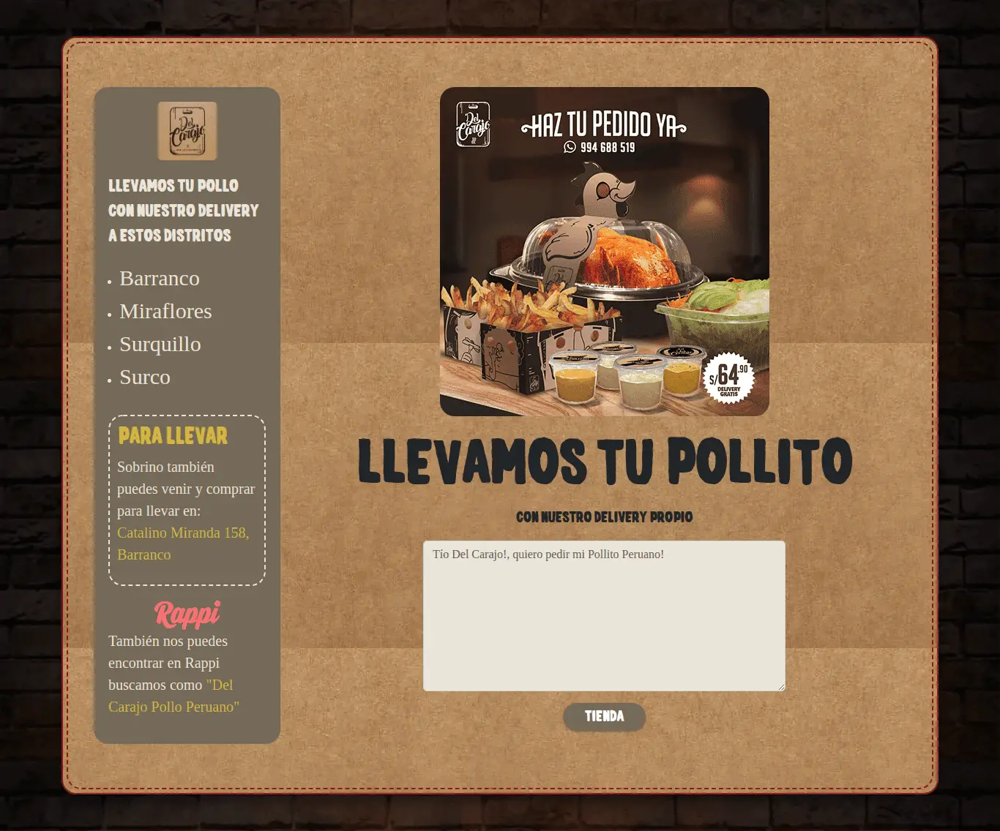
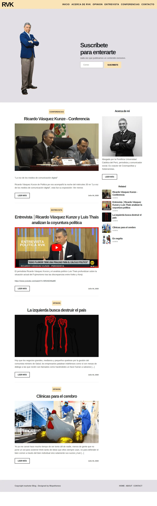

Welcome
Know Me More
Know Me More
I'm Jonathan J.R, a Web Developer
I am a web programmer passionate about development of new web solutions and apps mobiles. I specialize in languages JavaScript and PHP. One of my goals is keep learning new trends and technologies to apply them in solutions for Business.
Name: Jonathan Jacobo Romero
Email: jacoboromero.dev@gmail.com
Age: 26
From: Villa María del Triunfo
Download CV2
Years of Experience13
ProjectsResume
Resume
My Education
2012
Assembly and networking technician
SENATI
I learned how to assemble computers and install and manage servers
2014 - 2017
Networks and computer security
SISE
I learned programming in java and visual basic, also the linux operating system and cisco router configuration
My Experience
2017
Mobile Developer
IteamDevs
I participated in the development of an application called Mayllu
2018 - 2019
Frontend Developer
MOTT
I developed several web pages including the main page of the company
Projects
Projects

